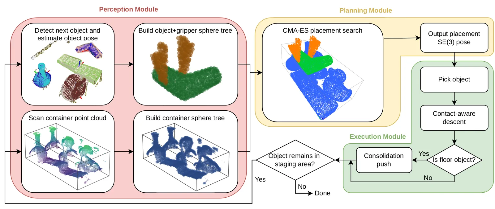
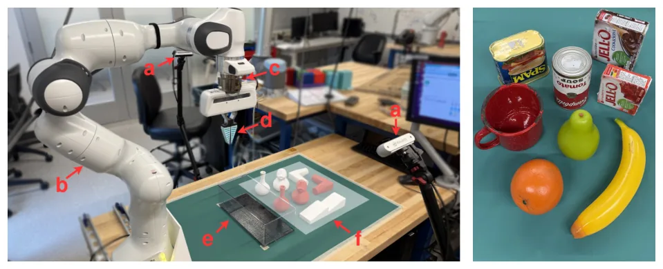
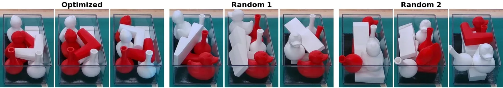
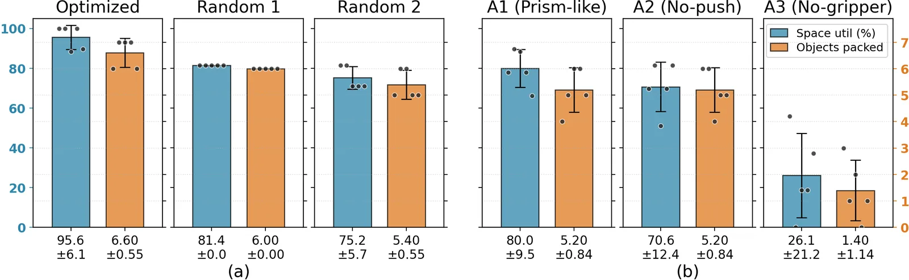

O problema do empacotamento denso
Empacotamento denso de objetos em contêineres é uma tarefa cotidiana em armazéns e centros de distribuição, onde a eficiência depende diretamente de quanto cada caixa consegue carregar. As formulações clássicas desse problema — bin packing, pallet loading — assumem que os itens são caixas regulares com dimensões conhecidas. Mas operações logísticas modernas cada vez mais precisam empacotar itens irregulares: garrafas, utensílios domésticos, peças de geometria arbitrária.
Trabalhos recentes em empacotamento de objetos irregulares avançaram bastante, especialmente em simulação. Métodos baseados em aprendizado por reforço, otimização de heightmap e campos de distância assinados (SDF) reportam densidades impressionantes. O problema é que esses métodos tratam o objeto como um corpo rígido isolado, com modelos de contato idealizados, e a geometria do gripper — a garra que segura o objeto — raramente entra como parte do objetivo de otimização contínua.
A hipótese dos autores é simples e poderosa: em configurações densas, o gripper tem tanta ou mais chance de colidir com o ambiente do que o próprio objeto. Um posicionamento que encaixa o objeto perfeitamente pode ser inalcançável porque o gripper bate na borda do contêiner ou em objetos já empacotados. Além disso, drift de percepção acumula ao longo de uma sequência executada em malha aberta, e pequenos erros laterais que seriam inofensivos no espaço livre fazem o objeto travar quando encaixado em uma folga apertada.

A ideia central: corpo composto e otimização em cinco graus de liberdade
A contribuição central do paper é tratar o objeto e o gripper segurando-o como um único corpo composto durante a otimização de posicionamento. O sistema representa esse corpo composto como uma união de nuvens de pontos: PO é a nuvem do objeto no seu próprio frame, PG é a nuvem do gripper, rigidamente anexada através de uma garra pré-registrada. A união PO ∪ PG forma o corpo composto.
A otimização busca sobre cinco graus de liberdade: posição horizontal (x, y), rotação em três eixos (θ₁, θ₂, θ₃). A coordenada vertical z é fixada analiticamente para cada candidato: o sistema indexa um heightmap da configuração atual do contêiner com resolução de células de 5 mm e calcula z como o ponto de suporte mais alto abaixo do objeto, subtraindo o ponto mais baixo do objeto após rotação. Essa operação — z*(x, y, θ) = max(h(i,j)) - min(Rp)z — garante que o objeto repousa sobre a superfície sem flutuar nem interpenetrar, sem custo extra de busca.
Para avaliar rapidamente distâncias e penetrações entre o corpo composto e a configuração atual do contêiner, cada nuvem é representada como uma árvore hierárquica de esferas (hierarchical sphere tree). A árvore é construída por divisão binária recursiva baseada em PCA, com uma esfera delimitadora de Ritter em cada nó, parando quando uma folha contém dez pontos. Os centros e raios das folhas do corpo composto em movimento são transformados pela pose candidata e testados contra as folhas da árvore do contêiner em paralelo, como operações tensoriais na GPU.
Objetivo multi-termo: qualidade de empacotamento e viabilidade de execução
Cada candidato x é pontuado por uma soma ponderada de oito termos. Os primeiros cinco descrevem qualidade de empacotamento e são avaliados apenas na árvore de esferas do objeto SO, porque descrevem a configuração que permanece após o gripper se retrair. Os três últimos representam termos de viabilidade, avaliados no corpo composto SO ∪ SG ou apenas em SG, porque o gripper deve ser levado em conta enquanto segura o objeto.
Os termos de qualidade incluem: volume da caixa delimitadora alinhada aos eixos, recompensando posicionamentos que comprimem em uma caixa envolvente pequena; distância do centroide, puxando o novo objeto para perto do centroide da configuração existente; penalidade de empacotamento, que penaliza penetrações entre o objeto e a configuração; altura do centroide, favorecendo camadas baixas; e distância frontal, incentivando colocação próxima à parede frontal do contêiner.
Os termos de viabilidade incluem: penalidade de colisão, que penaliza penetrações do corpo composto (objeto + gripper) com a configuração; penalidade de limite, que penaliza violações das paredes do contêiner; e penalidade de orientação, que mantém o gripper próximo à sua orientação nominal para evitar singularidades cinemáticas. Essa formulação multi-termo permite balancear densidade de empacotamento com alcançabilidade prática.
A busca é conduzida por CMA-ES (Covariance Matrix Adaptation Evolution Strategy), um otimizador livre de gradiente que amostra populações de candidatos de uma distribuição gaussiana multivariada, avalia-os em lote na GPU e adapta a covariância da distribuição com base nos melhores candidatos. O sistema roda até 200 gerações ou até convergência, com tamanho de população de 100.
Execução com monitoramento de força e push de consolidação
Após a otimização produzir uma pose candidata, o sistema executa o posicionamento em três etapas. Primeiro, o robô pega o objeto na área de preparação usando a garra pré-registrada. Segundo, move-se para a pose horizontal (x, y, θ) planejada e desce verticalmente enquanto monitora força/torque a 100 Hz através de um sensor ATI no pulso. A descida para no primeiro contato, absorvendo pequenas discrepâncias entre o heightmap discretizado e a superfície real.
Terceiro — e esta é uma contribuição importante — o sistema executa um push de consolidação após liberar o objeto. A otimização ciente do gripper deixa folga lateral intencional para garantir que o gripper possa se retrair sem colidir. O push de consolidação fecha essa folga residual: após liberar, o gripper empurra o objeto lateralmente em direção à parede frontal do contêiner até detectar resistência de força. Isso recupera a densidade que o planejamento ciente do gripper deixa para trás.
Após cada posicionamento, o contêiner é re-percebido. Duas câmeras RealSense montadas em lados opostos do workspace capturam profundidade, as medições são médias de dez capturas, as poses das câmeras relativas à base do robô são estimadas a partir de um marcador ArUco fixo usando SQPnP, e as estimativas repetidas são médias em SE(3). A mesa é removida por ajuste de plano RANSAC, os pontos restantes são agrupados com DBSCAN para isolar o próximo objeto alvo, e o cluster é correspondido à biblioteca CAD por ICP ponto-a-ponto pontuado por distância Chamfer. Essa re-percepção entre posicionamentos impede que drift acumule ao longo da sequência.

Experimentos: três sequências fixas e um conjunto YCB
Os autores testaram o sistema completo em um braço Franka Emika Panda real com um conjunto de sete réplicas impressas em 3D de objetos domésticos e de armazém irregulares: um suporte plano que ancora a camada base, dois vasos altos e esbeltos com tolerância apertada de ângulo de aproximação, dois objetos em forma de pato com geometria curva, e dois objetos em forma de L cujo perfil côncavo recompensa orientação cuidadosa. Cada entrada vem com uma malha CAD, uma nuvem de pontos de superfície amostrada e uma única garra antipodal pré-registrada no frame do objeto.
Para isolar a contribuição da regra de sequenciamento, o sistema foi avaliado em três ordenações fixas do conjunto de objetos, cada uma repetida por cinco tentativas. A sequência Otimizada segue a regra de ordenação maior-primeiro, sk = max(dim(Pk)) · VAABB(Pk), que favorece pegar objetos planos grandes para que a camada base seja formada primeiro. As sequências Random 1 e Random 2 são ordenações aleatórias que expõem quanta densidade o otimizador consegue alcançar sem o benefício da regra de sequenciamento.
Para testar generalização além desse conjunto, os autores avaliaram adicionalmente a abordagem em um subconjunto de oito objetos YCB: banana, caixa de gelatina, caneca, laranja, pera, lata de carne enlatada, caixa de pudim e lata de sopa de tomate. Esses objetos abrangem uma faixa comparável de complexidade de forma, de prismas simples a geometria curva e assimétrica. O conjunto YCB foi executado em uma sequência fixa por cinco tentativas.
Resultados: 95,6% de utilização de espaço e 19 de 20 tentativas completas
O sistema completou 19 das 20 tentativas de ponta a ponta. A única falha ocorreu na sequência Random 1, onde um objeto em forma de L foi comprometido cedo e pousou em uma orientação desfavorável que bloqueou posicionamentos subsequentes. A sequência Otimizada alcançou 95,6% de utilização de espaço em média, empacotando todos os sete objetos em todas as cinco tentativas. As sequências Random 1 e Random 2 alcançaram 89,2% e 91,4%, respectivamente, com uma tentativa de Random 1 empacotando apenas cinco objetos.
O conjunto YCB alcançou 92,8% de utilização de espaço em média, empacotando todos os oito objetos em todas as cinco tentativas. Isso demonstra que o método generaliza além do conjunto de treinamento impresso em 3D para objetos do mundo real com geometria e propriedades de superfície diferentes.
Os autores compararam contra um baseline de minimização de heightmap, representativo de trabalho anterior em empacotamento de objetos irregulares. O baseline foi testado em duas resoluções de grade: 5 mm (mesma que o método proposto) e 2,5 mm (mais fina). Na resolução de 5 mm, o baseline alcançou 88,3% de utilização de espaço, significativamente abaixo dos 95,6% do método proposto. Na resolução de 2,5 mm, o baseline alcançou 91,7%, ainda abaixo, mas com custo computacional 4× maior (32 segundos por posicionamento vs. 8 segundos).

Estudos de ablação: o que cada componente contribui
Para isolar a contribuição de cada componente, os autores conduziram três variantes de ablação na sequência Otimizada, cada uma por cinco tentativas. A primeira variante, 'Sem gripper', remove a otimização ciente do gripper: apenas SO é usado no objetivo, e o push de consolidação é desabilitado. A segunda, 'Sem push', mantém a otimização ciente do gripper mas desabilita o push de consolidação. A terceira, 'Prisma', substitui a representação de árvore de esferas por caixas delimitadoras alinhadas aos eixos (AABBs), simulando objetos de forma prismática.
A variante 'Sem gripper' completou apenas três de cinco tentativas, com duas falhas de colisão durante a aproximação — o gripper bateu em objetos já empacotados porque o planejador não considerou sua geometria. As três tentativas bem-sucedidas alcançaram 94,8% de utilização de espaço, comparável ao sistema completo (95,6%), indicando que a otimização ciente do gripper governa se um posicionamento é alcançável, não quão denso ele é.
A variante 'Sem push' completou todas as cinco tentativas mas alcançou apenas 88,7% de utilização de espaço, uma queda de 6,9 pontos percentuais. Isso confirma que o push de consolidação recupera a folga que o planejamento ciente do gripper deixa para trás, e é essencial para densidade máxima. A variante 'Prisma' também completou todas as cinco tentativas mas alcançou apenas 87,2% de utilização, mostrando que representação de objeto não-prismática é necessária para alcançar alta densidade de empacotamento para formas não-compactas.

Custo computacional: 8 segundos por posicionamento
O custo computacional médio por posicionamento foi de 8,2 segundos na sequência Otimizada, dos quais 6,8 segundos foram gastos na otimização CMA-ES (incluindo construção de árvore de esferas e avaliação de objetivo em lote na GPU), 0,9 segundo em planejamento de movimento com MoveIt, e 0,5 segundo em percepção e correspondência de objeto. Esse custo é competitivo com o baseline de heightmap na resolução de 5 mm (7,1 segundos) e significativamente mais rápido que o baseline na resolução de 2,5 mm (32 segundos).
A representação de árvore de esferas e a avaliação em lote na GPU são cruciais para manter o custo baixo. Cada geração do CMA-ES avalia 100 candidatos em paralelo, e a estrutura hierárquica permite poda precoce de testes de colisão quando esferas delimitadoras de nível superior não se intersectam. O custo de construção da árvore de esferas é amortizado ao longo de 200 gerações de avaliações.
O que o paper não mostra
O sistema foi testado em um conjunto relativamente pequeno de objetos: sete objetos impressos em 3D e oito objetos YCB. Embora esses conjuntos abranjam variação de forma importante (plano, curvo, côncavo, prismático, assimétrico), eles não cobrem toda a diversidade de objetos encontrados em operações de armazém do mundo real — objetos deformáveis, objetos com partes articuladas, objetos muito pequenos ou muito grandes, ou objetos com propriedades de superfície extremas (muito escorregadios, muito ásperos).
O sistema também não aborda re-estimação de poses de objetos já colocados para refinar o estado do contêiner. A re-percepção entre posicionamentos captura a configuração atual, mas se um objeto colocado se deslocar ligeiramente após o gripper se retrair, esse deslocamento não é detectado até o próximo ciclo de percepção. Isso pode acumular pequenos erros ao longo de uma sequência longa.
A regra de sequenciamento maior-primeiro é uma heurística simples que funciona bem para o conjunto testado, mas não é ótima em geral. Para conjuntos de objetos com distribuições de forma diferentes, outras regras de sequenciamento ou até mesmo planejamento de sequência aprendido podem ser necessários. O paper não explora esse espaço de design.
Finalmente, o sistema não lida com incerteza de garra ou objetos que podem escorregar durante o transporte. O monitoramento de força detecta contato durante a descida, mas não detecta escorregamento durante o transporte horizontal. Para objetos muito leves ou muito pesados, ou para garras com força de preensão inadequada, falhas de escorregamento podem ocorrer.
Por que isso importa
Este trabalho fecha uma lacuna importante entre planejamento de empacotamento de alta densidade em simulação e execução robótica confiável no mundo real. A ideia central — tratar objeto e gripper como um corpo composto durante a otimização — é conceitualmente simples mas praticamente poderosa. Ela muda a pergunta de 'onde o objeto cabe?' para 'onde o objeto-segurado-pelo-gripper cabe?', e essa mudança de perspectiva é o que permite ao sistema alcançar 95,6% de utilização de espaço com 95% de taxa de sucesso de ponta a ponta.
A combinação de otimização ciente do gripper, descida monitorada por força e push de consolidação forma um pipeline completo que absorve as três principais fontes de lacuna entre simulação e execução: colisões de tempo de aproximação ignoradas pelo planejador, drift de percepção acumulado ao longo de uma sequência em malha aberta, e erros laterais pequenos que fazem o objeto travar em folgas apertadas. Cada componente aborda uma fonte específica de falha, e a ablação mostra que todos os três são necessários para desempenho máximo.
O trabalho também demonstra que representação de geometria importa. A variante de ablação 'Prisma' mostra que aproximar objetos irregulares por caixas delimitadoras alinhadas aos eixos custa 8,4 pontos percentuais de utilização de espaço. Para objetos com geometria côncava ou curva, a representação de árvore de esferas captura a forma real de uma maneira que caixas delimitadoras não conseguem, e essa fidelidade geométrica se traduz diretamente em densidade de empacotamento mais alta.
O que fica
- Sistema trata objeto e gripper como corpo único durante otimização, evitando colisões de aproximação que planejadores tradicionais ignoram.
- Push de consolidação após liberação recupera folga lateral que planejamento ciente do gripper deixa, essencial para densidade máxima (6,9 pontos percentuais).
- 95,6% de utilização de espaço em objetos irregulares reais, completando 19 de 20 tentativas, superando baseline de heightmap em densidade e custo computacional.
- Re-percepção entre posicionamentos impede acúmulo de drift; representação de árvore de esferas supera caixas delimitadoras em 8,4 pontos percentuais.
Paper original: Gripper-Aware Automatic Dense Packing of Irregular Objects
Comentários
Nenhum comentário ainda. Seja o primeiro.